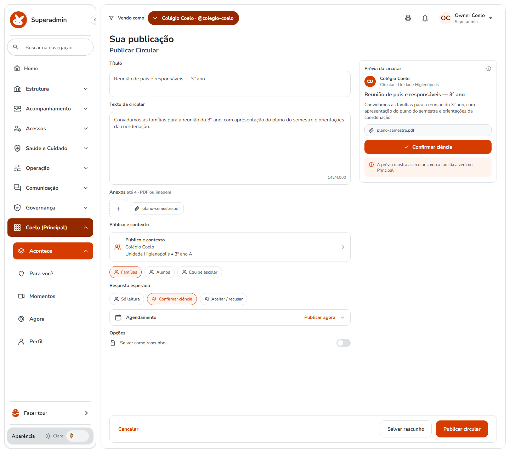
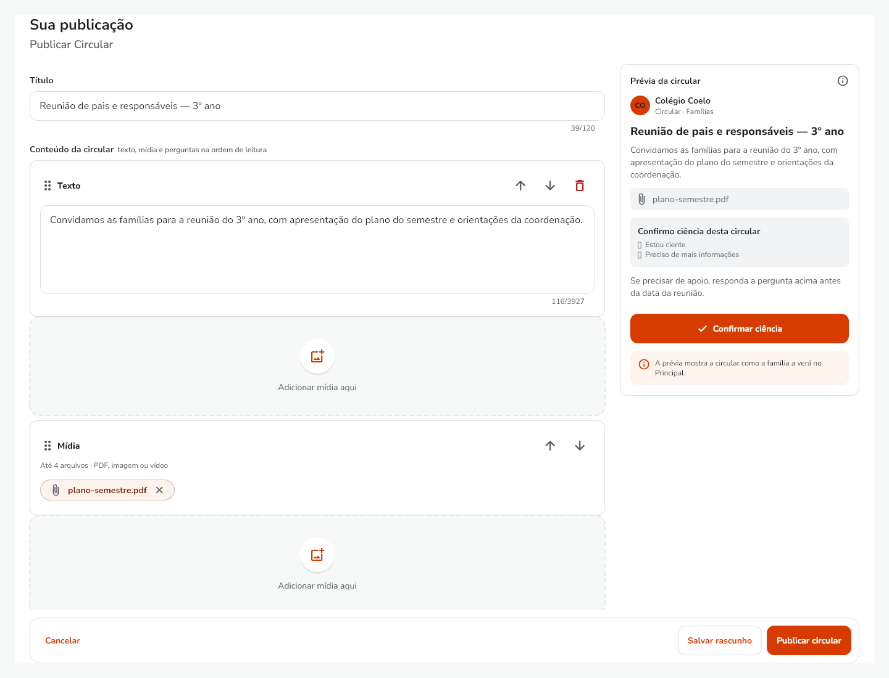
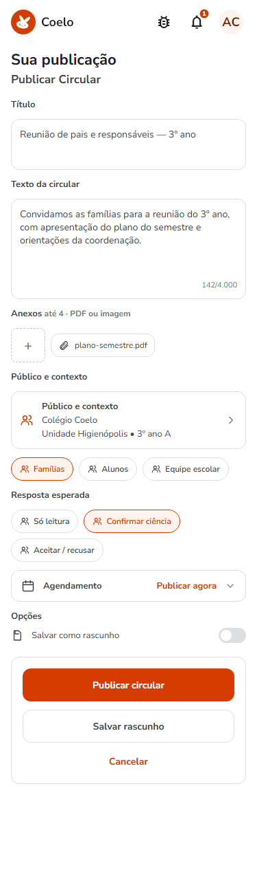
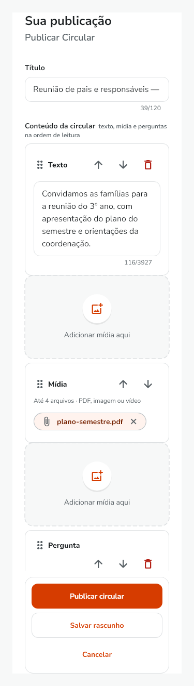
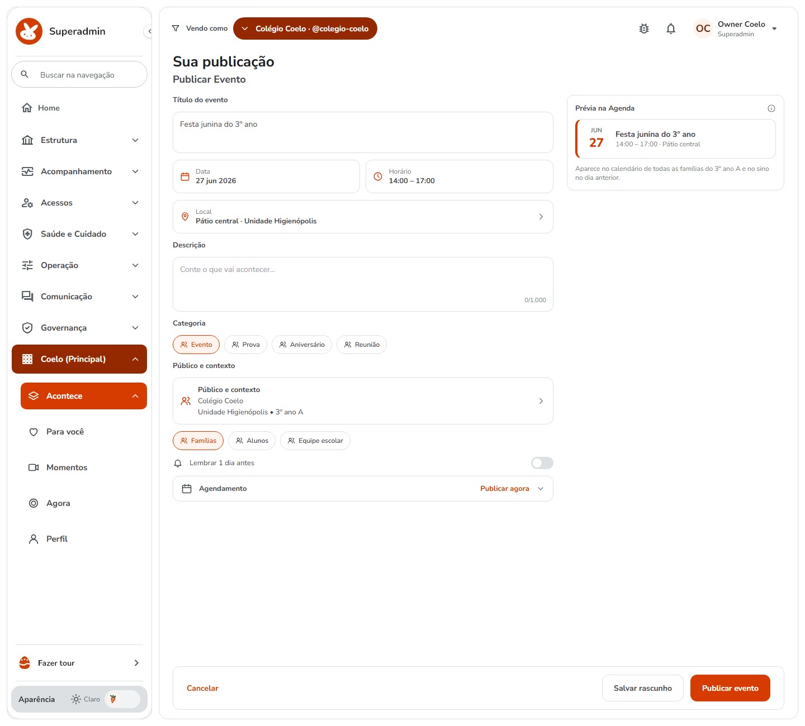
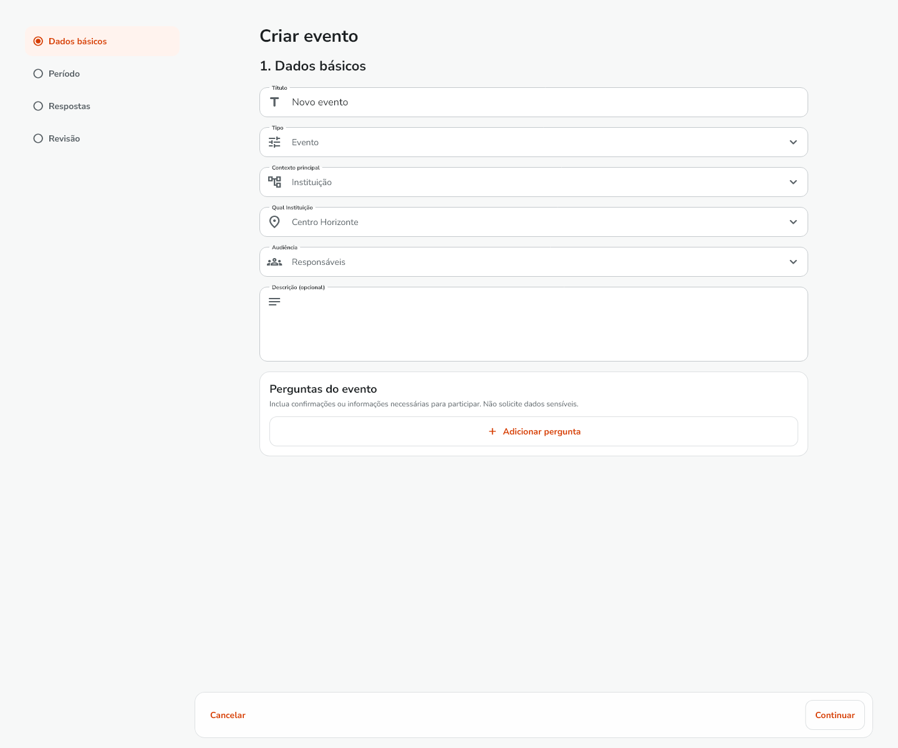
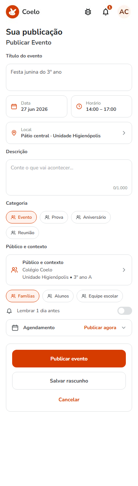
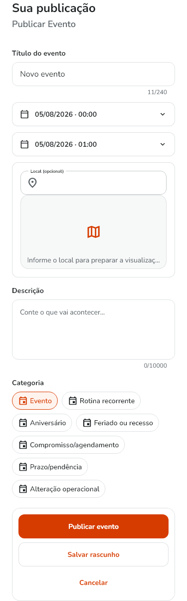
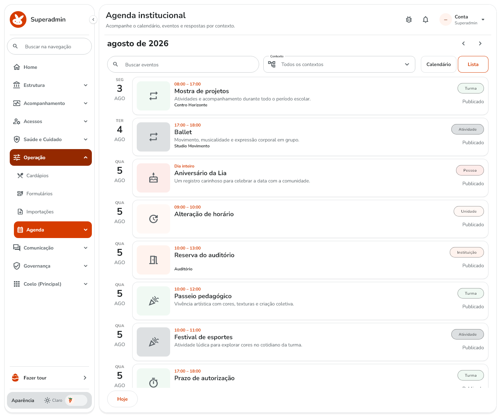

R = referência aprovada pelo Owner em 11/09 às 17:19 (canvas "Publicar no Coelo"); A = golden atual do app (tema claro). Responder em lista "nome_do_arquivo - decisão, observação". Aprovação visual não vira verified.
circular_composer_light_1440

Golden congela só o conteúdo do contêiner; o shell (menu, Vendo como) é o real do Superadmin. Prévia à direita, rodapé em card.
circular_composer_light_375

Sem prévia no mobile; rodapé empilhado (Publicar, Salvar rascunho, Cancelar).
agenda_create_light_1440

Data e horário em dois cards; Local com prévia; Categoria em chips (9 tipos do domínio, a referência mostrava 4); "Mais opções" abaixo com dia inteiro/fuso/recorrência/resposta/perguntas.
agenda_create_light_375

Uma coluna; rodapé empilhado.
agenda_list_light_1440
V-8: toggle Calendário/Lista do R restaurado no web (dois botões à direita da toolbar); mobile mantém o toggle 50/50.